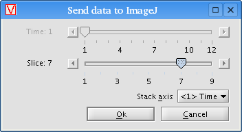

VisBio can export data directly to ImageJ for further analysis. To export the current data object, click the "Export >" button on the Data panel, then choose "Send to ImageJ..." from the popup menu. If the current data object contains at least one dimensional axis, a dialog box titled "Send data to ImageJ" will appear:

Choose the dimensional position of the image you wish to send to ImageJ. You can send a stack of images all at once by choosing a stack axis from the dropdown combo box.
Click the "Ok" button and VisBio will begin exporting your data to ImageJ.